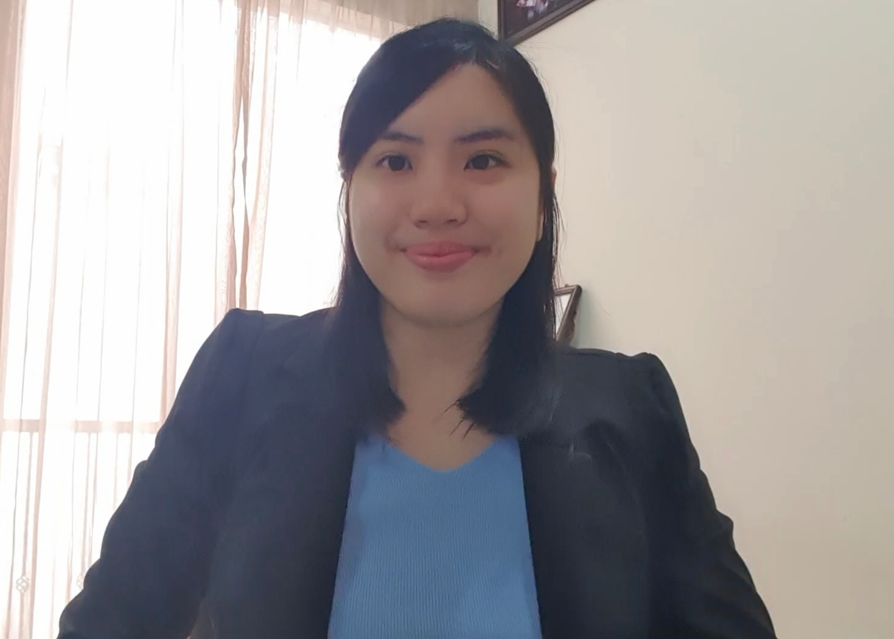

Lee Ming Xiang
Applied Scientist | Subsurface Domain Data Scientist | Geophysicist
I am Malaysian Chinese, and speak Mandarin (native), English (proficient), Malay (moderate), Hokkien and Cantonese.
Subsurface Applied Scientist with a Petroleum Geoscience and Geophysics background, 8+ years across oil & gas and AI. I lead end-to-end development and deployment of AI solutions, with expertise in LLM domain adaptation and post-training, multimodal AI, multilingual multi-agent systems, multimodal RAG, and computer vision for Seismic AI. Recently based in Abu Dhabi as Applied Scientist at Inception42, collaborating with ADNOC and MBZUAI on EnergyAI.
👉 mingxiang1006@gmail.com
Tech Stack
LLMs & Post-Training: SFT, DPO, GRPO, long-context reasoning, RAG, agentic tool use, context engineering
Multimodal AI & CV: CLIP, Vision Transformers, segmentation, self-supervised & contrastive learning, Seismic AI
ML & Deep Learning: PyTorch, Scikit-Learn, TensorFlow
MLOps: MLflow, Weights & Biases, model deployment and monitoring
Programming: Python, bash, SQL
Engineering: FastAPI, Docker, Git
Cloud: Azure, Azure Functions, Azure Web Apps, Azure Pipelines
Data & Apps: Postgres, Power BI, Dash, Streamlit, Plotly, Gradio
Statistics & Optimization: sensitivity analysis, derivative-free optimization
Domain Software: Petrel, Omega
Education
University of Malaya — Master of Data Science
2020 – 2022 | Graduated with Distinction
Thesis: Carbon Dioxide Emission Monitoring based on Prediction of Gas Fuel Rate using Machine Learning
Universiti Teknologi PETRONAS — B.Sc. (Hons) Petroleum Geoscience
2012 – 2017 | Gold Vice Chancellor Award | Major: Exploration Geophysics
Thesis: Application of Simultaneous Inversion Characterizing Reservoir Properties in X Field, Sabah Basin
Missouri University of Science & Technology — Student Exchange
Sept 2015 – Dec 2015 | Malaysia Representative (Distinction)
Petroleum Economics, Reservoir Characterization, Technical Communication, General Psychology
Work History
🚀 APPLIED SCIENTIST | Inception42
04/2025 – 09/2026 | Abu Dhabi, UAE
Led Inception’s Agentic Reasoning Multimodal LLM work for ADNOC’s EnergyAI initiative, integrating well logs and core data with the MBZUAI research team.
- Led development of ADNOC Well Log Bench, the first LLM evaluation benchmark in formation evaluation for ADNOC carbonate reservoirs.
- Led post-training of ADNOC Well Log-LLM, a domain-specialized long-context reasoning model, using SFT → DPO → GRPO → GRCO, achieving accuracy better than larger frontier-scale models such as Kimi-K2.6, GPT-5, and Qwen3.5 on long-context petrophysical reasoning tasks.
- Co-developed PetroHarness with MBZUAI, a custom agentic evaluation and execution harness for petrophysical interpretation workflows (structured reasoning, tool use, context orchestration, and automated analysis).
- Co-developed Petrophys with MBZUAI, a custom Python library for adaptive petrophysical workflows, supporting scalable well-log processing, feature extraction, formation-level analysis, and reusable interpretation pipelines.
- Devised scalable long-context solutions using dynamic feature selection, parallel processing, and geological chunking for efficient multi-well and cross-formation analysis.
- Integrated training-free optimization, including Group Relative Context Optimization, to improve reasoning accuracy without additional model training.
🚀 SENIOR DOMAIN DATA SCIENTIST | SLB KL Innovation Factori
11/2023 – 03/2025 | Kuala Lumpur, Malaysia
Generative AI lead for the SLB Asia Domain Data Scientist Community, driving end-to-end automated GenAI workflows, multimodal LLMs, and domain-specific LLM fine-tuning.
- Led multilingual-multimodal multi-agent systems for exploration and production, connecting structured and unstructured multimodal RAG to agentic geoscience workflows.
- Led domain-adapted post-training of Mistral LLM for drilling operations and geomechanics risk prediction, surpassing GPT-4 with ~96% accuracy.
- Integrated deep learning OCR with multimodal LLMs for automated report table extraction, reducing processing time by 70% with >70% accuracy using a small language model.
- Developed on-prem handwritten and multilingual RAG for document intelligence across Latin, Cyrillic, and English, with a deployed multilingual chatbot.
- Architected a self-supervised and supervised Hybrid ResNet–Efficient Channel Attention network for high-fidelity pre-stack seismic signal enhancement (swell noise and linear noise attenuation).
- Pioneered automated time-to-depth conversion and velocity-model uncertainty analysis: 800 multi-scenario velocity calibrations in 4 hours, with optimal model selection insights in 10 minutes.
- Probabilistic rock physics modelling via ML optimization (global sensitivity analysis, derivative-free local optimization, and clustering), deployed as Azure SaaS with Azure Functions, SendGrid, and PostgreSQL.
- Real-time distributed fiber-optic sensing with edge-enabled streaming analysis: 71% data-size reduction and ~USD 10,000/month estimated bandwidth savings; anomaly detection with unsupervised STEGO.
- Technical reviewer for Geoscience and Remote Sensing Newsletter and IPTC.
🚀 DATA ANALYTICS ENGINEER | SLB KL Innovation Factori
06/2021 – 11/2023 | Kuala Lumpur, Malaysia
- Technical mentor for a fine-tuned upstream petroleum language model for unsupervised multitask learning; surpassed pretrained GPT-2 small and medium by 10% accuracy.
- Developed cross-domain Behind Casing Opportunities (BCO) ML models: F1 of 74% (perforation flag), 95% (BCO flag), 74% (permeability), and 80% (net pay permeability).
- Built Adaptive Prescriptive Well Performance Intelligence by integrating >3 million data points; multiprocessing (63% faster processing) and async I/O (87% faster retrieval). Adopted as a SaaS dashboard for daily production monitoring.
🚀 GEOPHYSICIST | SLB Geosolutions
03/2018 – 06/2021 | Kuala Lumpur, Malaysia
Seismic processing geophysicist for narrow- and wide-azimuth surveys in ultra-shallow and deep-water basins, for operators including PETRONAS, ExxonMobil, ONGC, PTTEP, and Santos.
- Expert in seismic deblending, denoise, demultiple, time migration, and velocity picking; processed surveys offshore Australia, India, Gabon, Malaysia, and Myanmar.
- Automated P190 and SEGD data extraction, reducing effort from 2 weeks to 20 minutes (>90% time saving).
- Pioneered automated parameter analysis and recommendation for Adaptive Deghosting with a Principal Geophysicist, saving 70% testing time and scaling across basins including Offshore Australia, Gulf of Mexico, and Gulf of India.
🚀 RESEARCH ASSISTANT | Centre of Seismic Imaging, Universiti Teknologi PETRONAS
Assisted Prof. Dr. Deva Prasad Ghosh on seismic anisotropy imaging for deep reservoir and fractured basement, and on a book publication on seismic interpretation.
Publications
🏆 A Domain-Expert-Curated Benchmark and Domain-Specialized LLM for Subsurface Well Log Interpretation. Under review at ICLR 2026.
🏆 SPE-236501-MS: Well Log LLM Benchmark: ADNOC First Domain-expert-curated Benchmark for LLM Reasoning of Well Logs on Carbonate Reservoir (2026). Abu Dhabi International Petroleum Exhibition and Conference.
🏆 SPE-236034-MS: PetroHarness: An Open-Source Agentic Harness for Auditable Formation Evaluation (2026). Abu Dhabi International Petroleum Exhibition and Conference.
🏆 Integrating Data Science into Rock Physics Modelling Workflow (2024). GEO 4.0 Digitalization in Geoscience Symposium, Al Khobar, Saudi Arabia.
🏆 Adaptive Deghosting Dashboard (2021). SLB Technical Coordinators Meeting.
🏆 Imaging Multi-order Multiples — Shallow Water Case Study from Southeast Asia (2019). SEG Kuwait “Seismic Multiples — The Challenges and the Way Forward” Workshop.
🏆 Abstract of Optimum Notch Frequency Recovery using non-CMS Approach (2019). SLB Technical Coordinators Meeting.